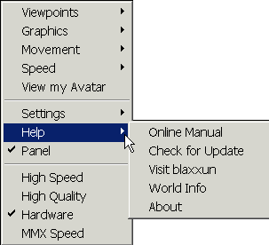

How to Manipulate the Scene
You need to have the Blaxxun Contact version 4.4 or higher installed on your computer before you can use WebTOP. Operation of WebTOP requires basic operation knowledge of the Blaxxun Contact . Detailed instructions on the use of the browser can be found at the following URL:
http://www.blaxxun.com/products/contact/3d/
They can also be accessed by clicking on the ? symbol (Help) at the Blaxxun Contact navigation panel. The following instruction will include a short description of the Blaxxun Contact operation.The Blaxxun Contact Navigation Panel
The intended use of WebTOP is in the examine mode of the Blaxxun Contact. Under this mode, when you position the cursor over the scene, the navigation panel should look like this (labels were added to describe some of the controls):
Note the shape cursor, a plus sign with the letter E at the lower right quadrant. Note also the letter E in the middle of the navigation panel. The letter E tells us that the current navigation mode is the examine mode. To get to the examine mode, hold the shift and control keys then press the letter E.
Cursor Shapes
While in the examine mode, the cursor might take either of the following shapes:
Default shape while examining the scene. Shape when a WebTOP widget is active. Help and Pop-up Menu
You can invoke the pop-up help menu by clicking on the question mark at the navigation panel or by clicking on the right mouse button:
Click for Help
The pop-up menu provides help and control over the navigation paremeter:
 A view of the pop-up menu Rotating the Scene
You can rotate the scene by using the main control of the navigation panel:
Rotate Left Rotate at a -45 degree angle Rotate Right
Our preferred method for rotating the scene is to click on a scene element with the left mouse button then using the keyboard arrows to rotate up, down, left, or right.
Panning
You can pan the seen left or right by using the following controls:
Pan Left Pan Right Zooming in and out
You can zoom in or out by using the following controls:
Zooming-in Zooming-out
Viewpoints
While navigating WebTOP, you may want to use the provided viewpoints. The navigation panel provides a control for switching between viewpoint.
Previews Viewpoint Default Viewpoint Next Viewpoint Minimizing the Navigation Panel
You can increase the space used by the WebTOP scene by minimizing the Blaxxun Contact navigation panel. This is accomplished by clicking on the minimize panel button on the navigation panel.
Minimize Panel Once minimized, the minimize panel button turns red and the panel is reduced to the following shape:
Minimized Panel Clicking again on the minimize panel button reestablishes the navigation panel.
Keyboard Shortcuts
It is sometimes more convenient to use the keyboard to explore WebTOP. The following is a list of the most commonly used key combinations:
Page-Up Jump to next Viewpoint Page-Down Jump to previous Viewpoint Cursor(arrow)-Keys Navigation. Behaviour depends on current navigation mode. CTRL+SHIFT+W Navigation mode "Walk" CTRL+SHIFT+S Navigation mode "Slide" CTRL+SHIFT+R Navigation mode "Rotate" CTRL+SHIFT+E Navigation mode "Examine" CTRL+SHIFT+F Navigation mode "Fly" CTRL+SHIFT+P Navigation mode "Pan" CTRL+SHIFT+U Straighten Up SHIFT Speed up BACKSPACE Go back to the last position (Undo last navigation)